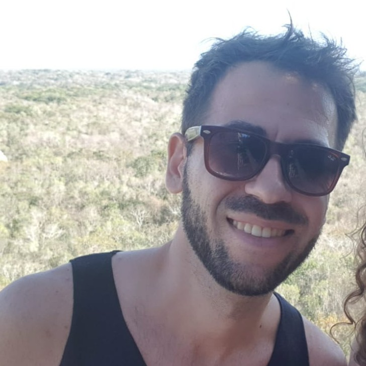

E
n
d
r
i
K
o
c
i

Hi! I'm a full stack developer based in Munich, Germany.
I define myself as a problem solver. I like challenges and to find solutions with the right tools, with the right technology.
I am fascinated by clean patterns, efficient algorithms, minimalistic and effective user interfaces, complex distributed systems...
Quotes
“First, solve the problem. Then, write the code.”
- John Johnson
“Knowledge is power.”
- Francis Bacon
“To know that you do not know is the best. To think you know when you do not is a disease. Recognizing this disease as a disease is to be free of it.”
- Lao Tzu
“Code is like humor. When you have to explain it, it’s bad.”
- Cory House
“Everyday life is like programming, I guess. If you love something you can put beauty on it.”
- Donald Knuth